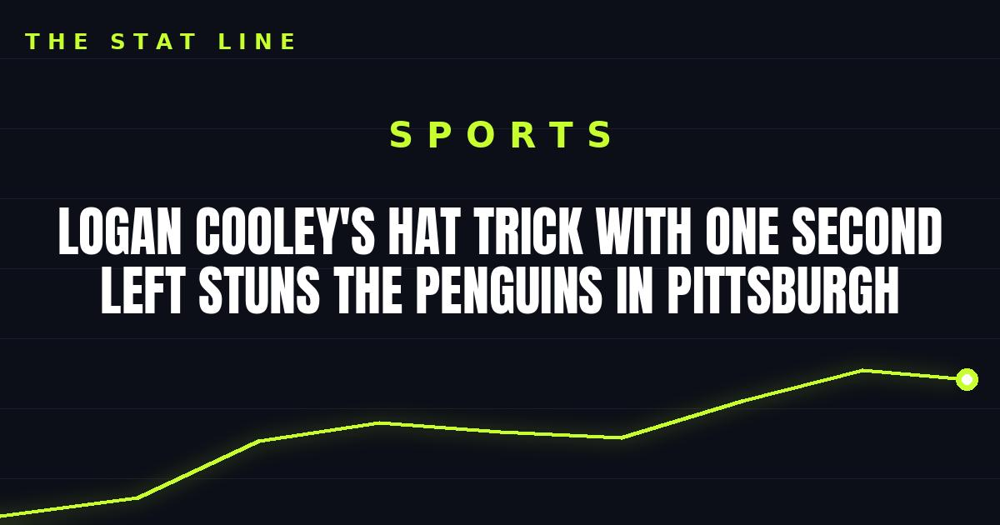

Logan Cooley's Hat Trick With One Second Left Stuns the Penguins in Pittsburgh
Logan Cooley completed his fourth career hat trick with one second left in regulation, then Mikhail Sergachev won it in overtime as Utah stunned Pittsburgh 4-3.

One second. That's all that was left when Logan Cooley tied it — and all Utah needed.
Cooley completed his fourth career hat trick with one second remaining in regulation, batting a puck out of the air on the doorstep, and Mikhail Sergachev scored 3:27 into overtime to lift the Utah Mammoth to a stunning 4-3 win over the Pittsburgh Penguins on Thursday night at PPG Paints Arena.
The finish, in 24 seconds
Pittsburgh looked home. Rookie Ben Kindel — playing his first game back after collapsing aboard the team plane on Oct. 20 — scored the go-ahead goal with 23 seconds left, putting the Penguins up 3-2 and sending the home crowd into celebration.
It lasted 24 seconds. Vincent Trocheck wired a shot from above the right circle, the rebound kicked loose, and an unmarked Cooley converted from the left doorstep to tie it with one second on the clock. In overtime, Barrett Hayton was denied on a 3-on-1 rush before Sergachev converted from deep in the right circle to end it.
A hometown story with a twist
The night carried extra weight for Cooley, a Pittsburgh native who had gone scoreless in his six previous games against the Penguins. He scored twice in the first period to make it 2-0 — at 4:40 and 14:11 — before Pittsburgh clawed back with goals from Erik Karlsson, a short-handed tally from Rickard Rakell, and Kindel's late go-ahead goal.
Cooley's hat trick is the kind of finish that defines a season early: a hometown kid, a scoreless history against his hometown team, and a goal with one second left that erases a loss and sets up an overtime winner.
What it means
Utah leaves Pittsburgh with two points it had no business getting with 24 seconds left. Pittsburgh leaves with a loss that will sting — a go-ahead goal in the final minute, erased almost instantly, in a building that thought the game was won.
Sources: Reuters, Hockey Informers
Gear up: Fanatics